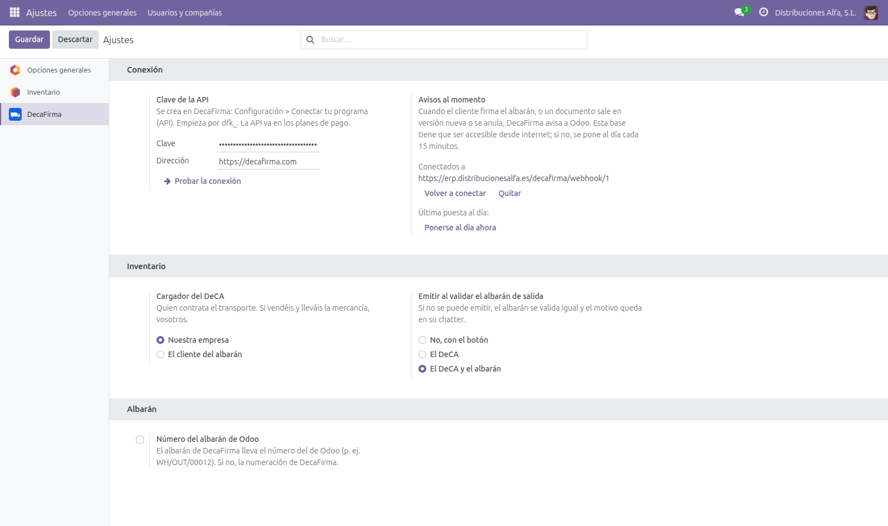

Stores the connection with DecaFirma (API key and webhooks), the shipments and their documents
(QR code, version, status, PDF and who signed) and keeps them up to date on its own.
It does nothing by itself: install DecaFirma Inventory (decafirma_stock)
to issue documents from your outgoing transfers.

Nothing leaves Odoo until you enter your own DecaFirma API key in Settings. From then on, only when a user issues, corrects, cancels or sends a document, Odoo sends DecaFirma the data the DeCA requires: company, customer, carrier and driver names, tax IDs (NIF) and addresses, vehicle plates, products, packages and weights, and the delivery slip PDF when you ask for it to be signed. DecaFirma sends back the QR code, the PDFs and the signatures. Remove the API key to stop it.
Questions? juan.canton@francodesystems.com · Francodesystems